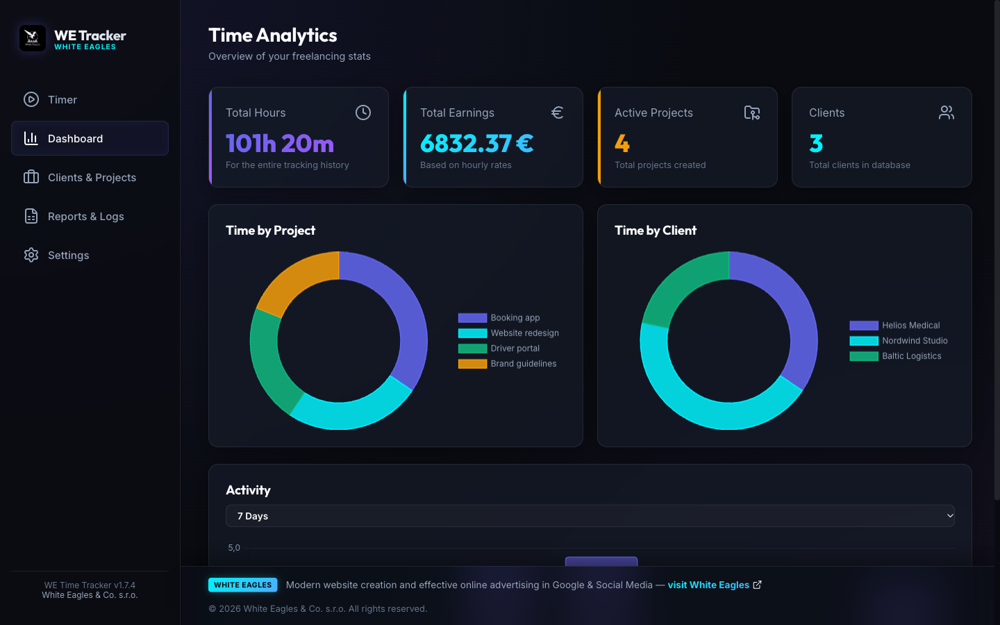
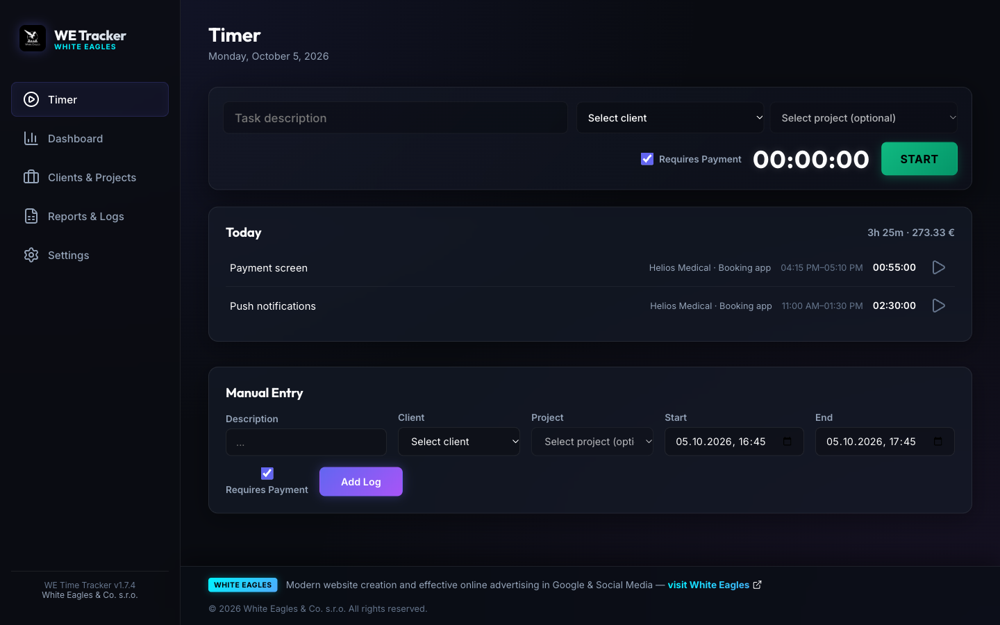

Billable hours that add up to the right number
Start the timer, pick the client, and WE Time Tracker does the arithmetic: hours per project, money earned at the rate that applied on the day, what each client has paid and what is still owed. It runs on your own computer, with no subscription and no account to create.
Free, open source, no ads. English and Russian.

What it does
Timer in the menu bar
The running timer sits next to the clock, so you can see it without opening the app. Pause it for a coffee and only the worked time is counted.
Money to the minute
Every entry is paid at its hourly rate down to the minute, with a one-minute minimum. No rounding up to blocks that quietly inflates an invoice.
Rates that stay put
An entry keeps the rate that applied when the work was done. Raising your rate changes what you earn next, never what you already recorded.
Paid, owed and in advance
Payments and deposits are a ledger per client. Mark work as paid and the matching payment is created for the uncovered part only, so a deposit never turns into a phantom balance.
Reports and CSV
Filter by client, project and period, then export the result as CSV for your accountant or your own spreadsheet.
Sync between computers
Optional sync through a hidden app folder of your own Google Drive. Work offline and it catches up the next time you are online.

Your data stays yours
Your clients, hours and rates are kept in a file on your computer. If you turn on sync, a copy goes to a hidden folder of your own Google Drive that only WE Time Tracker can open, directly from your computer. There is no server of ours in between, no account with us, no analytics and no ads. Details are in the privacy policy.